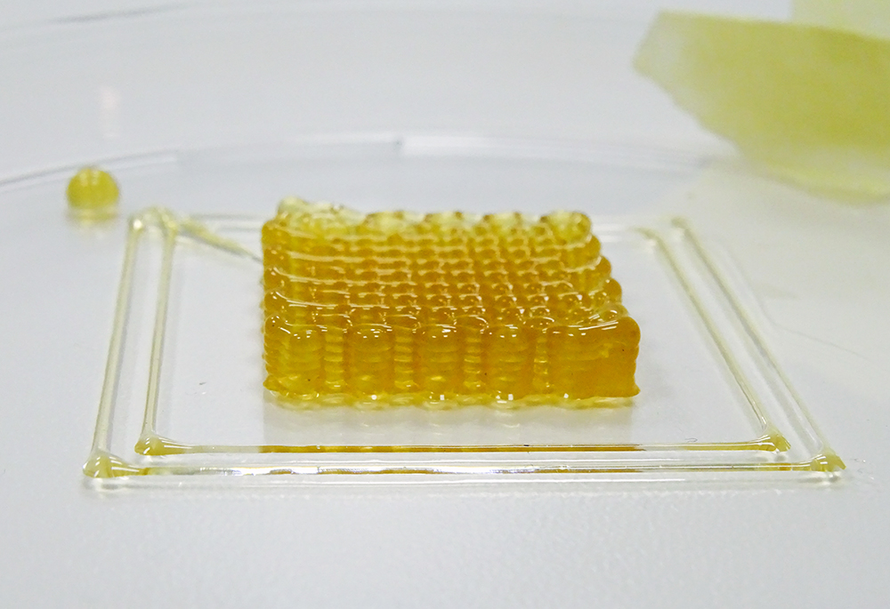
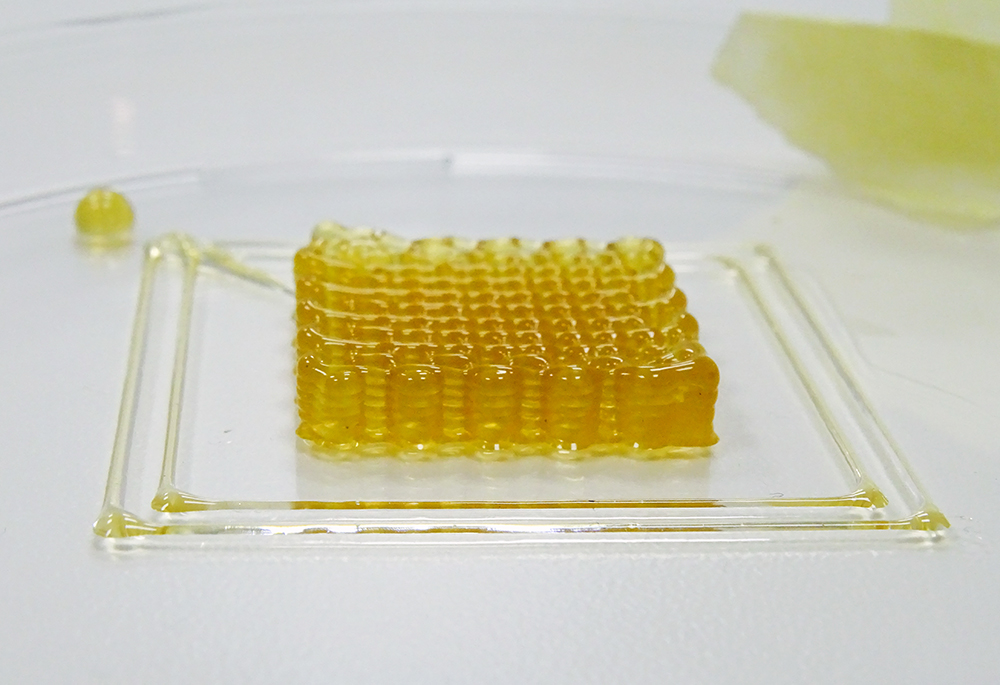

Our vision is to make a shift in the perception of bioprinting technology and including it in modern age systems as a technology that offers what others can not. We believe the technology should be seen as much more than just a tool and can have significant impact on various fields if integrated in the right way into the right environment.
Our main objective is to bring bio-printing closer to the audience in medicine, animal medicine, pharmacological industry and other fields. Historically speaking, making some new technology more affordable and adaptable usually triggered an explosion of new approaches and innovations and this is yet to happen in the field of bioprinting. We are curious about what there is to be seen and are glad to be able to share our contributions with you.
The price of current technology does not yet fit our vision. We develop fully functional open-source solutions that reach the standards set by the commercial, high-end machines. Most of our focus is on designing an Open Source Syringe Extruder as a self-contained unit. Main design features are:
We believe in the world we live in, sharing of knowledge is the way forward. We are interested in cooperation with partners from various fields to incorporate bio-printing in their environment.
 

Expect a list of publications related to this project.

Institut IRNAS Race, Valvasorjeva 42, 2000 Maribor, Slovenia
Luka Banović - banovic@irnas.eu Boštjan Vihar - bostjan@irnas.eu